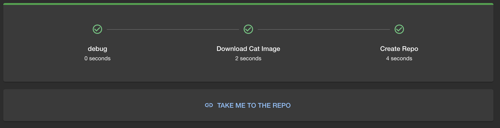

Part 2 - Creating a new action
In this exercise we will create a new action for Backstage. Custom actions allow us to extend the functionality of Backstage to do whatever we need as part of a template. They are re-usable steps that can be used in multiple templates.
Our new action will allow us to get a random cat picture. It will call the Cat API to get the location of a cat photo, download the file and place it in the working directory.
There are 4 steps to creating a new action:
- Create a new scaffolder plugin
- Register your plugin
- Write your action
- Use it in the template
Create a new scaffolder plugin
To create a new scaffolder we can leverage the backstage templates by running
This will create a new scaffolder module in the plugins directory. You can
name the plugin whatever you like, for this example we will call it
cat-scaffolder.
Congratulations, you have created a new scaffolder plugin!
Tip
You can see what other plugin types there are by running yarn new.
You will see that the plugin is automatically added to the package.json in
packages/backend as a dependency. This is because the new plugin is a backend
plugin.
It will also be automatically imported in the packages/backend/src/index.ts
file so its ready to use straight away.
To confirm everything is working correctly you can now run yarn start to start
backstage, navigate to Installed Actions
and you should see acme:example in the list. (we will change this later!)
Broken module.ts
As of the time of writing this workshop, there's a bug in the plugin generator.
Please go to plugins/scaffolder-backend-module-cat-scaffolder/src/module.ts and update the following import:
Write your action
Now we need to write our action. This is the code that will be executed when the
action is run as part of a template. We are going to use example.ts in our
plugin as a starting point.
First, update the definition of the action, changing the ID and description and
removing the required inputs and properties definitions. We don't need them
(yet). Your call to createTemplateAction should something look like this:
...
return createTemplateAction({
id: "catscanner:randomcat",
description: "Downloads a random cat image into the workspace",
schema: {
input: {
catCount: z => z.number({ description: 'The number of cat images to download' })
},
},
async handler(ctx) {
ctx.logger.info(
`Running example template with parameters: ${ctx.input.catCount}`
);
await new Promise((resolve) => setTimeout(resolve, 1000));
},
});
...
Now need to implement the action code in the handler function in
src/actions/example.ts,. This is where we get the cat image from the
API and download it to the working directory.
The API that we will use is https://api.thecatapi.com/v1/images/search, this
API will return a JSON object with a URL to a cat image. Once we get this json,
we then need to download this image and save it to the working directory.
You can access the working directory using ctx.workspacePath and write to the
log using ctx.logger.info.
Unit Testing
You can and should write unit tests for your action using the instructions in the backstage docs.
Use it in a template
Now that we have our action we can use it in a template.
You can add this action to the template by adding the following to the
spec.steps section of the template yaml file:
You can now test your cat downloading skills in the template! You should end up with a repo that has a single cat image in it.
Don't forget to refresh your template!
Hint
Ensure you place the steps in the correct order. After running the automation you should see all the steps executed as well a link to the newly created repository.

Bonus Round - Testing
If you have not already you should try writing unit test for your new action using the instructions in the backstage docs.
You can see that the template was generated with an example unit test already setup as an example for you